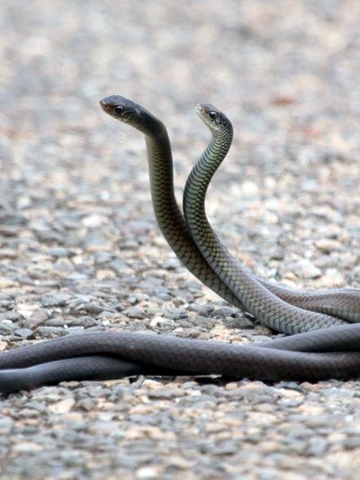

Papuan Black Snake (Pseudechis papuanus) is an enormous, deadly venomous and thick species of
Elapid found in the south part of New Guinea, with its length up to 2.44m. It is marked by its sleek
black or brown coloration on its body, white throat and greyish underneath parts.
wikipediaThe females lay 12 to 18 eggs and are usually seen during the rainy season in swampy forests
near the coast.

This is a case of two pairs of Black snakes in a fight. This kind of behavior usually occurs
among two males competing for dominance to impress the female. After which, the female will decide for
herself who deserves her attention.